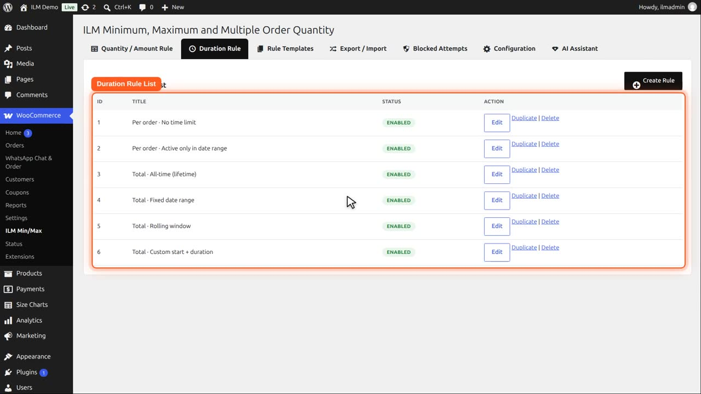
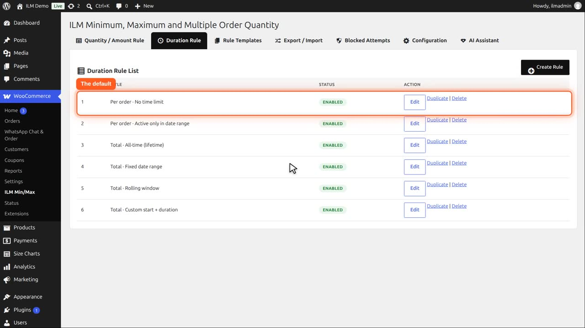
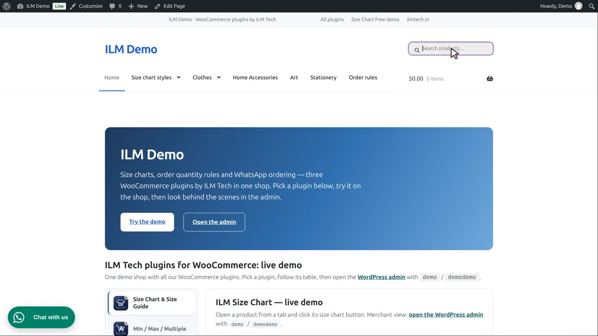
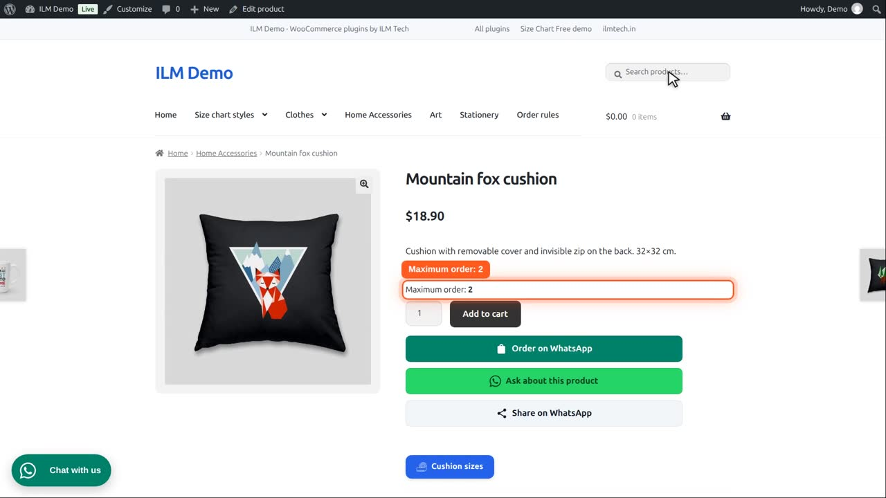

Pro add-on. This feature needs the Pro add-on. See Free and Pro.
| Type | Meaning |
|---|---|
| Per order · No time limit | Applies to every order on its own, with no time restriction. Each new order starts fresh. |
The Duration Rule tab lists the rules that decide over which time a limit is counted. Six come with the plugin.

The first one, Per order, no time limit, is what every rule uses unless you pick another.

You pick it in the Duration column of the rule table. The Mountain fox cushion has a maximum of two, per order.

Demo is logged in. Five days ago they ordered two of these. With Per order, that does not matter: each order starts fresh.

So they can order two again today. The limit is only checked inside one order.